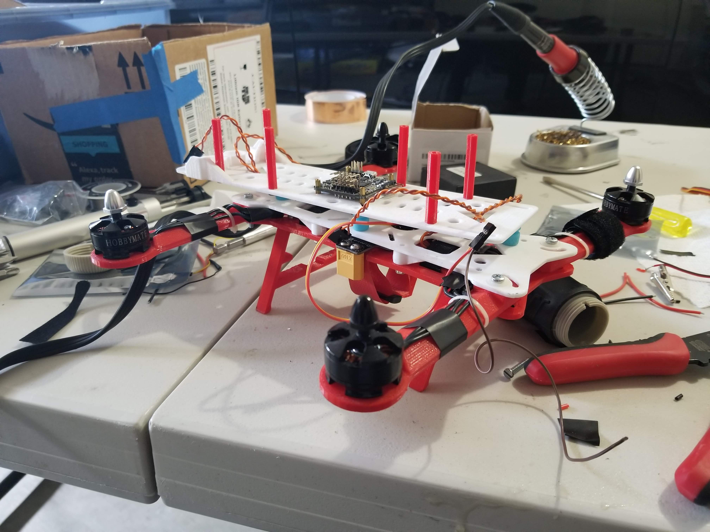
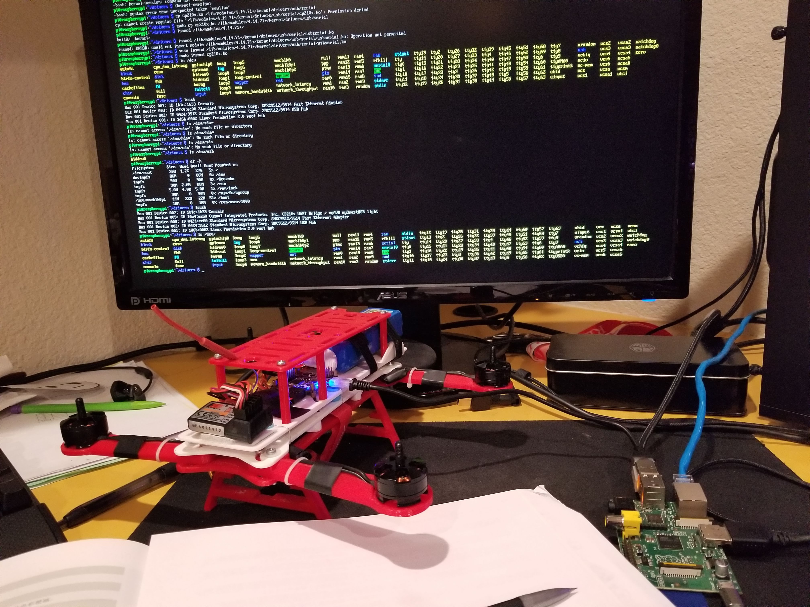
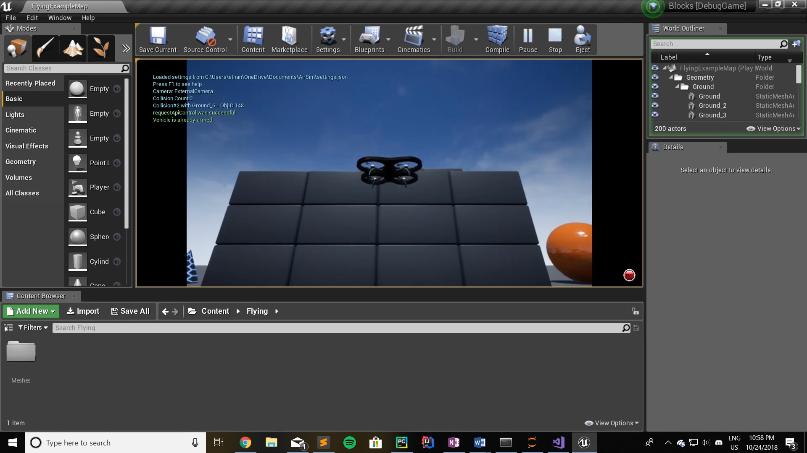

droneee
After completing simoninithomas' online Deep Reinforcement Learning Course, I wanted to try my hand at applying RL to real life. I decided that the best way to do that was to take the drone I tried building with a friend a few years back, and somehow make it fly autonomously using RL. I wanted to use Proximal Policy Optimization (PPO), since it was the state-of-the-art algorithm that OpenAI had used to beat the top Dota2 teams.
PPO involves collecting a small batch of experiences interacting with the environment and using that batch to update its decision-making policy. Once the policy is updated with this batch, the experiences are thrown away and a newer batch is collected with the newly updated policy. This is the reason why it is an “on-policy learning” approach where the experience samples collected are only useful for updating the current policy once. The key contribution of PPO is ensuring that a new update of the policy does not change it too much from the previous policy. This leads to less variance in training at the cost of some bias, but ensures smoother training and also makes sure the agent does not go down an unrecoverable path of taking senseless actions.
After a solid two months of work on the project, I realized that it was too dangerous to test and I didn't have the appropriate hardware, so I put the project on hold. (pretty funny that it took me 2 months to realize that a 3D printed fpv drone with blades spinning upwards of 80mph was too dangerous to test but more on that later).
Below is a quick run-down of my process building the drone so far, and the valuable lesson I learned while making it:
Build Process
Building
 The drone itself actually started as a joint project with a friend of mine, but we ran into a problem and never got around to completing it. After like 2 years of the drone parts sitting in my garage I decided to rebuild and re-purpose it for this project.
The drone is based off the Hovership MHQ2, which was designed to be a cheap FPV drone. As a result, the hardware we bought was built for drone racing. This hardware included a Naze32 flight controller. I 3D printed the drone frame, soldered the motors, escs, power-distro board, etc., and assembled the drone over the course of a weekend. It flew fine using an actual RC controller (not that I really knew how to fly it lol).
I didn't realize it when I started the project, but the firmware for Naze32 (cleanflight/baseflight) has little to no support for control outside of RC (and required a bit of a hack to control it using a raspberry pi later on).
Python Flight Control and Design
 Once I had a working drone, I had to figure out a way to control it with a neural network. I found a python library called pyMultiWii, which used the MultiWii Serial Protocol to send/receive data from the flight controller. I installed it on a raspberry pi and hooked it up to the flight controller. After a couple days of trying to get it to work (raspberry pi compatibility smh) and realizing that I had to downgrade my flight controller firmware way down, I managed to control the drone using a raspberry pi. The whole process was pretty sketchy, since I was essentially bypassing the flight controller entirely and only using it to relay raw speed signals directly to the motors. The next step was to figure out how to design a program that could control the drone autonomously.
My design went like this:
- Train an Actor-Critic PPO network that can translate 6 different directional inputs (i.e. forward, backward, up, down, left, right) into motor speed signals
- Utilize a pre-trained face detection neural net to detect faces from the raspberry pi camera's input
- Write a program that can take the output from the face detection neural net and determine the distance of the subject from the drone (calculated from the size of the bounding box), then translate them into a directional movement (to keep the subject within 10 feet of the drone).
- Feed that directional input into the PPO network, which then outputs the motor speed signals, which would then be fed into the flight controller using pyMultiWii.
- Profit? (put all the stuff on the drone and hope it works)
Training
 The reason my design is so convoluted is because, while it is theoretically possible to skip the object detection network entirely and feed the PPO network the raw camera input, I had no realistic way to train such a network. My thought was that I could feasibly train a PPO network within a simulator if I just told it to fly (stably) in a certain direction and measured how accurately it achieved that.
Initially I tried to use the AirSim simulator, which was built on unreal engine. Unfortunately, the python interface for the simulator was pretty lacking, so I instead switched to an OpenAI gym environment called gymfc (gym flight controller).
oof.
So at this point in the build process, I had actually completed every step in my design (except for debugging, which should be steps 5-500). Now step 5 is where I ran into a bit of a hiccup and realized that the project was too dangerous. See, I was installing everything on the raspberry pi, when I realized that there was no possible way that a tiny raspberry pi was powerful enough to fit both an object detection neural net, a PPO neural net, process camera input, and control the drone at the same time.
It was also at this time that I realized that the drone blades would spin wayyyy to fast for it to be safe, meanwhile I was trying to have it follow a persons face! Why did it take me like 2 months into the project to realize this super simple fact? College apps probably. I was in a rush to finish this project in time for college apps and it never occurred to me that if my algorithms weren't perfect (which you already know they were the furthest thing from it), there was a very real possibility that the drone could crash into someone, or crash into a rock or something and shatter into a million pieces.
The moral of the story, at least for me, is that AI can be dangerous, yet the field is dominated by people rushing to develop the most advanced algorithms and secure the most funding. Taking a step back at the beginning and thinking about the impact is pretty important, ngl.
Issues currently preventing me from completing the project:
- Need to use a safer drone (that doesn't have blades spinning upwards of 80mph)
- Need either:
a computer small enough to fit on the drone that can run both an object detection neural network and the PPO
or train a different PPO algorithm that can take raw camera data and drone attitude/IMU as input and output motor speed levels. - Ideally also need a flight controller with more support for autonomy. In fact, if I do it this way, I might not even need the PPO network to output motor speed signals, since the flight controller would be able to interpret directional input.
Hopefully I can fix these in the future. When I reboot this project, I am definitely going to choose a different drone architecture, namely one that uses the Pixhawk flight controller and mavlink (since they were designed with autonomy in mind and have support for such features).
sirmammingtonham/droneee